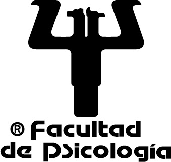

Armando Q. Ángulo-Chavira
Doctor en Psicología (Neurociencias de la Conducta)
Facultad de Psicología
Universidad Nacional Autónoma de México (UNAM)
Ciudad de México, México
Trabajo en psicolingüística y ciencias cognitivas, con experiencia en estudios de predicción lingüística, rastreo ocular, EEG y modelado computacional aplicado al lenguaje.
Acerca de mí
Soy Doctor en Psicología (Neurociencias de la Conducta, UNAM; examen 28 de enero de 2025), con formación previa como Maestro en Ciencias del Comportamiento (Neurociencias, UdeG, 2018) y Licenciado en Psicología (UdeG, 2015).
He realizado estancias y colaboración académica en instituciones como el Department of Experimental Psychology (University of Oxford, proyecto “Modelling the Infant Bilingual Lexicon”) y el Center for Brain and Cognition (Universitat Pompeu Fabra).
Intereses
- Predicción lingüística en población típica y clínica
- Adquisición del lenguaje (infancia temprana)
- Bilingüismo y acceso léxico
- Medidas conductuales y psicofisiológicas (eye-tracking, pupilometría, EEG)
- Análisis computacional (RSA, series de tiempo, redes léxico-semánticas)
Herramientas / métodos
Visual World Paradigm, cloze norms, EEG/ERP, representational similarity analysis, eye-tracking, análisis no paramétrico por agrupamientos, WordNet, modelos regresivos.
Investigación
Mi trabajo se enfoca en cómo se organiza y anticipa la información lingüística durante la comprensión, considerando factores semánticos, fonológicos y contextuales, y usando medidas experimentales y análisis computacionales.
Líneas principales
- Predicción lingüística (monolingües y bilingües)
- Desarrollo del léxico y priming en infantes
- Procesamiento del lenguaje en síndrome de Down
- Redes léxico-semánticas en envejecimiento y trastornos neurocognitivos
- EEG/ERP y similitud representacional aplicada al lenguaje
Palabras clave
psicolingüística, predicción, bilingüismo, adquisición del lenguaje, rastreo ocular, pupilometría, EEG/ERP, redes semánticas, IA aplicada, normas de completamiento oracional
Proyectos y desarrollo
Proyectos PAPIIT (colaborador)
- IN304825 – Representación del conocimiento conceptual (2025–2027)
- AG300224 – Predicción lingüística en monolingües y bilingües (2024–2026)
- IN303221 – Restricción oracional y similitud de palabra en EEG (2021–2023)
Software / herramientas
- Potenciales relacionados a eventos basados en modelos regresivos (2024)
- Análisis temporal de generalización (2024)
- Análisis de similitud representacional (2023)
- Similitud semántica basada en WordNet (2022)
- Desarrollo de PsyGaze para análisis de rastreo ocular en línea (2021)
Tecnología / prototipos
- Plataforma para experimentos en línea (2025) – fase de implementación
- Cámara con IA (visión egocéntrica) para estudios del desarrollo (2024) – fase de implementación
- Botonera para respuestas conductuales en experimentos cognitivos – finalizado
Docencia
He impartido cursos y talleres extracurriculares orientados a análisis de datos y métodos experimentales en ciencias cognitivas y neurociencias (p. ej., rastreo ocular, EEG, series de tiempo, R y SPSS).
Cursos / talleres (selección)
- Procesamiento de Señales Biológicas para Estudios de Neurociencias (2019, 36 h)
- Programación en Matlab para estudios de Neurociencias (2018, 36 h)
- Estadística aplicada a proyectos de rastreo ocular (2024)
- Análisis de series de tiempo aplicado a rastreo ocular (2024)
- Teoría y análisis de electroencefalograma (2022, 32 h)
- Programación básica en R (2020, 32 h)
Participación formativa
- Dirección, revisión y sinodalías de tesis (licenciatura/posgrado)
- Supervisión de servicio social (desarrollo/implementación de software)
- Asesoría metodológica y técnica (incluye software)
Publicaciones seleccionadas
Selección breve (indexadas y recientes). Para la lista completa, puedes enlazar el CV o un Google Scholar.
- Arias-Trejo, N., Ángulo-Chavira, A. Q., & Plunkett, K. (2025). The effects of phonological and semantic similarity on early referent identification. Journal of Experimental Child Psychology.
- Ángulo-Chavira, A. Q., Castellón-Flores, A. M., & Arias-Trejo, N. (2025). Hyper-speed meaning and form predictions: An EEG-based representational similarity analysis. Psychonomic Bulletin & Review.
- Ángulo-Chavira, A. Q., Castellón-Flores, A. M., & Arias-Trejo, N. (2023). Sentence-final completion norms for 2925 Mexican Spanish sentence contexts. Behavior Research Methods.
- Gillen, N., Ángulo-Chavira, A. Q., & Plunkett, K. (2024). Prime saliency in semantic priming with 18-month-olds. Cognition.
- Ángulo-Chavira, A. Q., et al. (2022). Perceptual dissimilarity, cognitive and linguistic skills predict novel word retention… Cognitive Development.
Contacto
Información
Email:
angulo_chavira@comunidad.unam.mx
Institución:
Facultad de Psicología, UNAM
Ubicación:
Ciudad de México, México